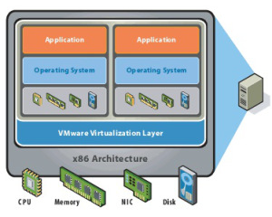
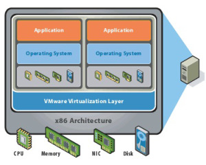

Sanallaştırma Nedir?
Sanal makinelerin tanımını ilk kez Popek ve Goldberg yaptı. Onlara göre sanal makine “gerçek makinenin etkili, soyutlanmış bir kopyasıydı”.

Temel olarak sanallaştırma; sahip olduğumuz fiziksel donanımı, sanal makineler (virtual machines) yardımıyla, birbirinden bağımsız, birden fazla sistem veya modül koşturabileceğimiz hâle getirme işidir. Örneğin; fiziksel bir adet makinemiz olsun. Normal şartlarda bu makinenin üzerinde tek işletim sistemi koşturabilmekteyiz. Sanallaştırma işlemininde kullanılan yazılımlar ile bu makine üzerinde birden fazla işletim sistemi çalıştırma imkânına sahip oluyoruz ve bu işletim sistemleri birbirinden bağımsız çalıştıkları gibi istersek birbirlerini de tanıyabilmektedir.
Sanallaştırma yazılımları, sanal makinelere ortak olarak donanımları paylaştırır. Bu paylaşım ne kadar iyi yapılırsa, o kadar fazla verim alınacaktır. Maliyet o oranda azalacak ve sistem performansı da o oranda artacaktır. Temel Sanallaştırma mimarimiz ise aşağıdaki gibi gösterilebilir.
 

Peki bu sanallaştırma bize ne gibi yararlar sağlayacak?
Sanallaştırma, işlevlerine göre, Proses Sanal Makineleri ve Sistem Sanal Makineleri olmak üzere iki türe ayrılırlar:
Proses Sanal Makineleri: Herhangi bir işletim sistemi içinde, modüller üzerinden çalışır ve sadece bir tek işlemin çalışmasını sağlar. Platform bağımsız bir ortam yaratabilmek için oluşturulmuştur. Bunun anlamı, yazılan programların donanım ve işletim sistemi farklı olan sistemlerde de çalışabilmesini sağlamaktır. Yani Linux’ta çalışan bir programın aynı zamanda Windows, BSD ve OSX üzerinde de çalışabilmesini sağlamayı amaçlamıştır. Aslında bu çeşit sanallaştırmayı, JAVA ve .NET platformlarından yakından tanıyoruz. .NET uygulamaları CLR (Common Language Runtime), Java uygulamaları ise JVM (Java Virtual Machine) kullanırlar. Yazılan bir Java programı, işletim sistemine bakılmaksızın, işletim sistemi içinde oluşturulmuş olan JVM üzerinde çalışmaktadır. Bu sayede her işletim sistemi için aynı programın ayrı bir versiyonunun yazılmasının önüne geçilmiş olur.
Sistem Sanal Makineleri: Bu sanal makineler, bir sanallaştırma programı arayüzü ile, donanımı ortak kullanmaktadırlar. Bu sanal makinelerin her birinde birer işletim sistemi koşturabiliriz. Bu sanal makineler aynı zamanda işletim sistemleri üzerinden, işletim sistemi kaynaklarını kullanarak da çalışabilmektedirler.
Açık Kaynak Kodlu Sanal Makine Yazılımları: Açık kaynak kod mantığı ve lisansı ile dağıtılan bu yazılımlar başlıca VirtualBox, Xen, Bochs, CoLinux, FAUmachine, Hercules emulator, KVM, LilyVM, QEMU, SheepShaver olarak sıralanabilir.
Ticari Sanal Makine Yazılımları: Ticari anlamda başlıca kullanılan yazılımlar arasında VMware, Microsoft Virtual PC, VM/CMS, Parallels Workstation, vThere, Parallels Desktop for Mac, SVISTA, Trango, Virtual Iron Software gösterilebilir.